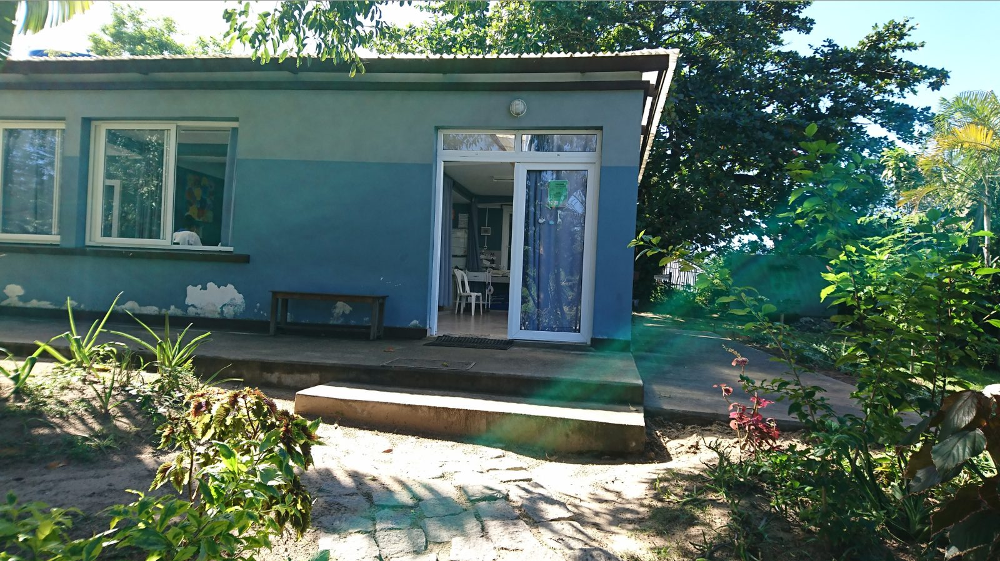
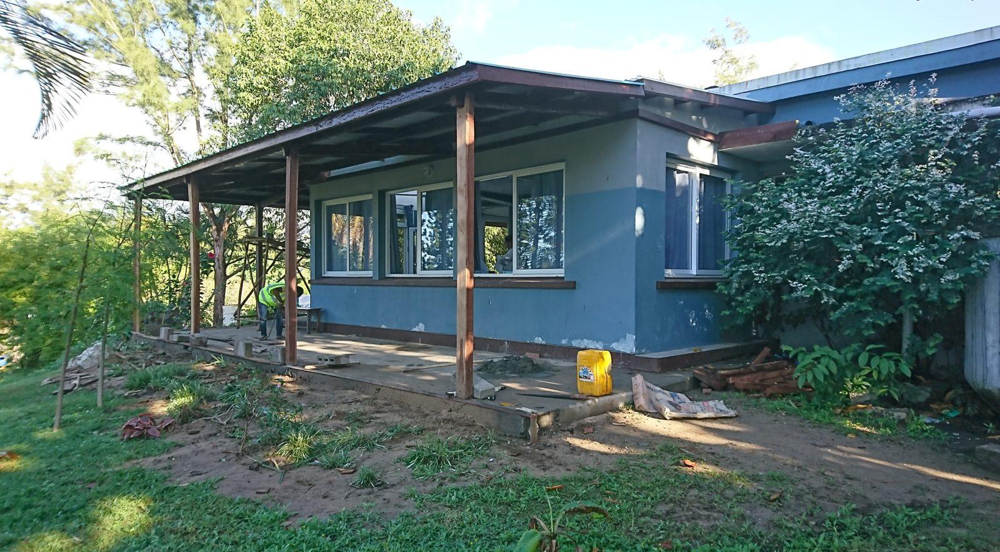
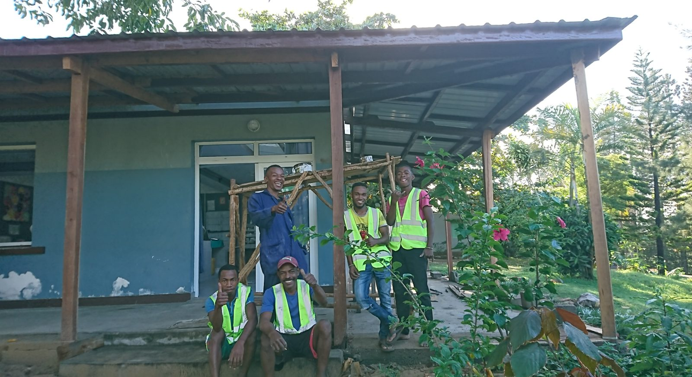
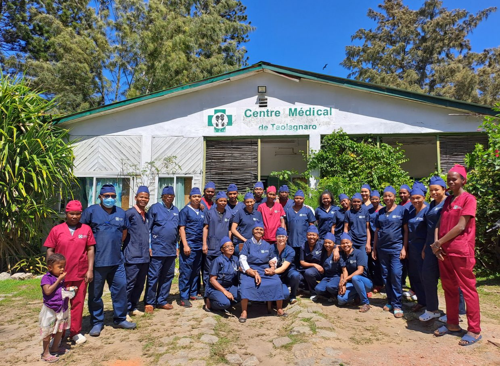
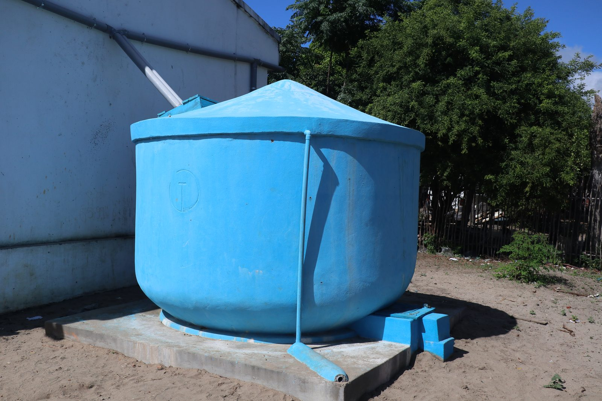
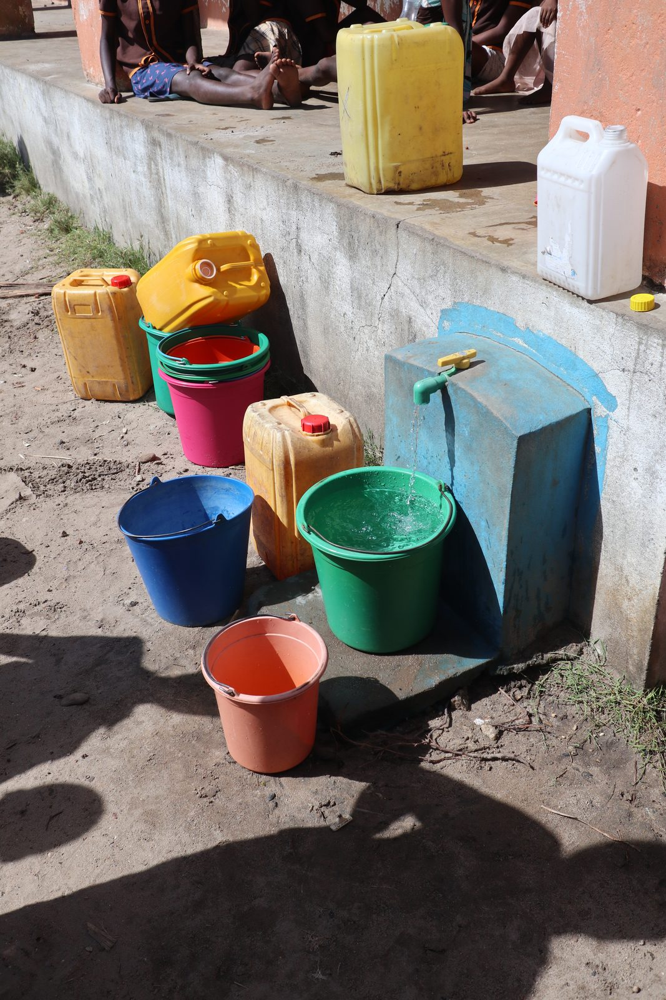
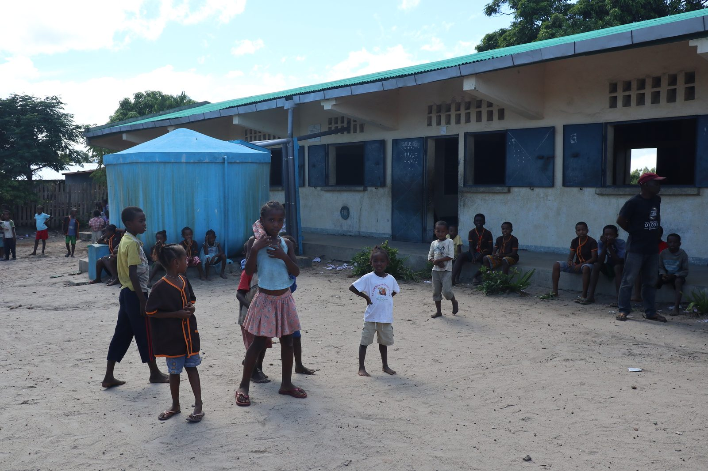

Jahresbericht 2022
Liebe Mitglieder des Vereins, liebe Helfer, Spender und Unterstützer!
Im Jahr 2022 konzentrierte sich unser Verein auf die Realisierung von drei Projekten in Fort Dauphin.
Centre Medical de Taolagnaro in Fort Dauphin
2021 finanzierten wir die Umgestaltung des Klinikgebäudes mit einem neuen Not- und Erstaufnahmeraum. Dieser wurde 2022 um eine Überdachung der neu geschaffenen Veranda an zwei Seiten des Gebäudes erweitert, um den Patienten und deren reichlichen Angehörigen einen Wetterschutz für den Warte- und Aufenthaltsbereich zu bieten. Mit den bewährten einheimischen Handwerkern wurde durch Dr. Jane Olivier das Projekt zügig umgesetzt. Wir finanzierten das Projekt mit 10.000,- Euro.



Das Entstehen und die Fertigstellung zeigt sie uns in den folgenden Filmen:
Im September 2022 wurden zudem alle Mitarbeiter mit individuell vor Ort hergestellten Uniformen ausgestattet.

Thank you for our new uniforms!!
Melzer-Madagaskar Project has been a loyal investor since 2016, and they have funded projects including our solar energy system, clinic computers, some laboratory equipment …, training for our staff, an ultrasound machine, hospital materials, our new (2021) Emergency Room, outdoors patient waiting area (2022), new incinerator (2022), and our professional new uniforms!! I will let my pictures speak my and our thousand words of thanks! And the link to our video of thanks …
– Dr. Jane Olivier
Im Oktober 2022 begann ein Mitarbeiter des Centre Medical, Jeanickot Rabenandrasana, seine Ausbildung zum Medizinischen Pfleger in der Hauptstadt Antananarivo. Wir übernahmen die Kosten von 2.700,- Euro für das erste Jahr und versprachen, bei erfolgreichem Studium auch die Folgejahre zu finanzieren.
TATIRANO-Trinkwasserprojekt Grundschule EPP Manambaro
Nach den sehr guten Erfahrungen im Jahr 2021 bei der Zusammenarbeit mit Harry Chaplin und Tatirano Social Enterprise vereinbarten wir nun für 2022 erneut die Installation eines hybriden Regenwasser-Sammelsystems für Trink- und Waschwasser, diesmal für die Grundschule EPP Manambaro. Wir investierten 10.000,- Euro.

Die Versorgung mit sauberem Wasser ist eine wichtige Voraussetzung für ein Mindestmaß an Hygiene und damit für die Krankheits-Prävention. An dieser Schule profitieren 749 Kinder und weitere 100 Personen von 30 angesiedelten Familien. Auch hier besteht das System aus insgesamt zwei jeweils 10.000 Liter fassenden Tanks aus Stahlbeton zum Sammeln von gefiltertem Regenwasser, einem System von Zuleitungen über Dachflächen sowie mehreren Wasserentnahmestellen, verteilt über das Schulgelände.


Es verbessert sich nachhaltig die Lebensqualität der Kinder. Bevölkerung und Handwerker vor Ort werden eingebunden. Füllstände und Funktion der Tanks sind im Netz abrufbar: www.tatirano.org
Spendeneinnahmen und Dank
Im Jahr 2022 konnten wir insgesamt 21.958,00 Euro an Spendeneinnahmen verbuchen. Das verdanken wir neben den Vereinsmitgliedern zahlreichen uneigennützigen Spendern. Dafür sagen wir allen Helfern des „Melzer-Madagaskar-Projekt e.V.“ herzlichen Dank.
Bitte helfen Sie auch weiterhin.
Aktuelle Infos, Spendenhinweise und Fotos unter: www.melzer-madagaskar-projekt.de